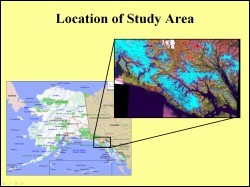
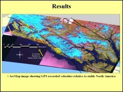
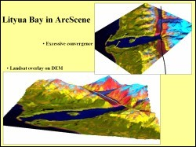

 This study uses GPS measurements of north and east velocities over a five-year time period at established stations in Southeast Alaska to analyze plate motions near the Fairweather Fault. The objective is to create a map that displays GPS measurements of plate motion as oriented and scaled vectors. The area of study stretches from Yakatat on the west to Juneau on the east. This area includes Glacier Bay National Park and other small towns including Haines and Skagway. Geologically, the study area is very important because it includes the fault contact between the North American and the Pacific plate, including the area of the Yakutat block.
 From the GPS data available for the study, the total velocity vector and its geographic direction were computed and input as a vector layer in GIS. Each GPS observation was plotted as an arrow where the length of the arrow was equivalent to the magnitude of the velocity vector, and the direction of the arrow corresponded to the geographic direction. These observations were overlayed on a Landsat image mosaic of the study area to give them a more meaningful spatial display. A third layer diplaying the fault data was added to the GIS to produce the map shown here.
 For further analysis a digital elevatin model was added to the GIS. The Landsat image mosaic was draped over the DEM in Arc scene and further overlayed by the fault and GPS data. This helped to interpret the relation of geomorphology to structural features and tectonic movements. This figure shows a 3-D representation of area of Lityua bay. The Fairweather Fault cuts across the northeast end of this fiord. Glaciers flowing into the bay occupy the fault trace that runs northwest southeast. From this map a decrease in northwest motion is seen in closer proximity to the fault.